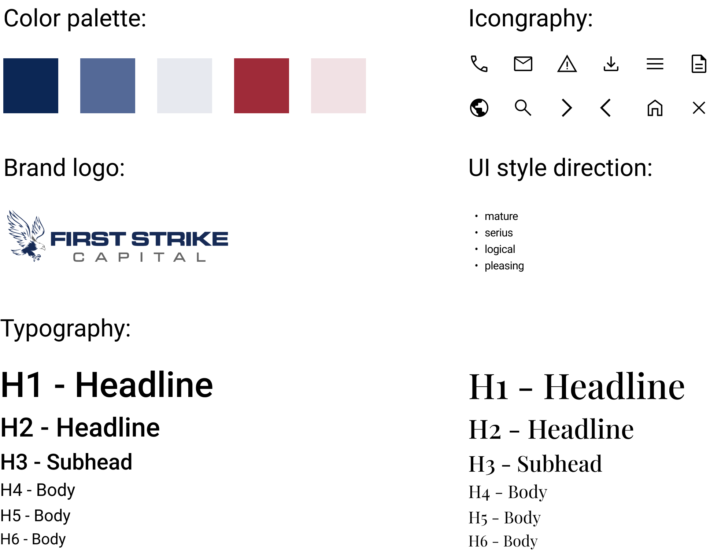

First Strike Capital
First Strike Capital is a New York City based investment management firm. Their primary objective is growth of investor capital by using a long/short equity strategy.
Problem:
First Strike Capital is facing challenges in effectively communicating their services and attracting potential clients through their outdated website. The current website lacks a clear and concise message, inconsistent user interface, and does not effectively showcase the firm's unique investment strategies and successful track record. As a result, the website is not meeting the expectations of its target audience and is not effectively contributing to the firm's growth.
Role
- Project Manager
- UX Researcher
- UI Designer
Tools Used
- Adobe Illustrator
- Adobe photoshop
- Figma
- Google Drive
.
.
.
Empathize
.
.
.
Site Analysis

Site analysis is a critical and fundamental step in the web redesign process, especially for websites like First Strike Capital. The objective of conducting a site analysis is to closely examine the original website and identify areas for improvement in terms of content and functionality. By analyzing the website, we gained insights into the target audience, the purpose of the website, the user experience, and the overall flow of the site.
Site Annotation
In the process of redesigning the First Strike Capital website, we have annotated its current design to highlight areas where we believe improvements are necessary. This process, known as redlining, involves marking up the website and providing explanations for why changes are needed. The focus of our modifications is to make the website more user-friendly by improving its font, navigation system, and use of visualizations. These key changes will enhance the overall user experience and provide a more intuitive and accessible website for visitors.
Heuristic Evaluation
Our team conducted a survey utilizing Heuristic Evaluation to assess the web appearance/aesthetics, content, navigation, and efficiency/functionality of the website. In addition, a colleague with industry expertise was enlisted to examine the website's interface and evaluate its compliance with established usability principles. Heuristic Evaluation is a method that involves evaluating a website or product based on established usability principles and guidelines. The survey we conducted followed this method, and we asked questions that assessed the website's compliance with these principles. This helped us to identify any areas where the website could be improved in terms of user experience and functionality. Involving a colleague with industry expertise further added to the credibility of our evaluation process. By having someone with extensive knowledge of the industry examine the website, we were able to gain a fresh perspective on the interface and receive a second opinion on its usability and compliance with established principles.
Feedbacks:
Drop shadow on H1 looks weird cause it's the only one
Icons are a little off
Magnifying glass for risk management?
Tag line a little basic?
The only thing it says is based in NYC-Investor portal has a different feel from the rest of the site.
Image on contact feels a bit inconsistent
leadership icon is the same as logo?
Not sure how i feel about hero cross dissolve transition/
No footer?
Can’t indentlify location on the site
No error message
Should have an error 404 page???
Not compeling enough to pursuade users to join
No clear mission of the company to understand who you are
Overall flow looks unorganized and unprofessional
.
.
.
Define
.
.
.
Competitor Analysis

Our team conducted a competitor analysis of other websites in the business investment space to gain a deeper understanding of the strategies and market goals of our competitors. We closely examined the features, differentiators, strengths, weaknesses, and customer reviews of these websites to gain insights into what is working well and where there may be opportunities for improvement. The purpose of this analysis was to help us improve our products and services and stay ahead of the competition. By understanding what our competitors are offering and how customers are responding, we were able to identify areas where we could differentiate ourselves and offer unique value to our target audience.
User Persona
Our team targeted single mothers as our audience and user base, based on the assumptions and insights provided by stakeholders. This approach allowed us to quickly move forward with the design and development process without getting overly bogged down in the details of user behavior. To gain a deeper understanding of the needs and challenges faced by single mothers, we created a user persona. This persona helped us to better understand the pain points, needs, goals, and general characteristics of our target audience. By doing so, we were able to create more effective and impactful solutions that directly address the challenges faced by single mothers.

User Scenario
A single mother who is operating with limited savings must make wise investment decisions in order to generate profits and support her child. The stress and pressure of life can take a toll on both the mother and child's health, making it imperative to find a smart and secure way to invest their limited resources. The goal is to ensure that the mother's investments will not only provide financial stability, but also promote peace of mind and reduced health risks for both the mother and child.

.
.
.
Ideate
.
.
.
User Insight Statement
A single mother who is operating with limited savings must make wise investment decisions in order to generate profits and support her child. The stress and pressure of life can take a toll on both the mother and child's health, making it imperative to find a smart and secure way to invest their limited resources. The goal is to ensure that the mother's investments will not only provide financial stability, but also promote peace of mind and reduced health risks for both the mother and child.
How Might We
How might we assist a single woman who is seeking to generate additional income from her savings without having to sacrifice too much time and effort from her primary job? The goal is to provide her with an opportunity to improve her living environment for her child while still being able to focus on her primary job responsibilities.
Point of View Statement
First Strike Capital was established with the goal of driving the growth of investor capital. However, our team has noticed that the current website is not effectively serving this purpose. We have identified several issues with the website, including a lack of relevant information, an unattractive web interface, and the absence of a Chinese translation. These shortcomings are causing potential investors to look elsewhere and reducing the amount of web traffic to the site. As the majority of investors are based in China, the lack of a Chinese translation is particularly detrimental to the company's goals. Our aim is to address these issues and enhance the website to attract more investors and increase web traffic.
Mind Map
The use of a mind map has proven to be a valuable tool in the design of our website. The mind map provides a visual representation of the potential navigation paths that users may take and the content that they will encounter on each page. This step is essential for the design of the user interface. By relying on the mind map, our team can ensure that we are all on the same page and can logically plan out the overall appearance of the website. This helps to ensure that the website is both user-friendly and effective in delivering the desired information to visitors.
Mood Board
A mood board is a tool that we use to bring organization and inspiration to our project. It serves as a visual representation of the desired style and aesthetic, comprised of images, text, and samples of various objects. Before diving into the actual design process, the mood board helps us refine the project's style and maintain consistency throughout. Each member of the team contributes valuable resources to help guide the overall aesthetic of the project, ensuring that it is coherent and consistent. The use of a mood board helps us to stay on track and keep our focus on the desired outcome for the project.
Style Guide
Having completed the mood board, we establish the stylesheet to guarantee that all contributors maintain a unified and clear approach that mirrors the company's style, preserving brand consistency in both design and writing. Our team has opted to retain the original color and add a dark red secondary hue for contrast against the navy. The style direction we're pursuing is serious and mature to align with the brand, and for typography, we've selected neutral, clean, and simple fonts along with easy-to-understand universal icons.

.
.
.
Prototype
.
.
.
Wireframing

High Fidelity

.
.
.
Testing
.
.
.
Usability Testing
Four participants finished our two task usability tests, where the scenario, based on a small business owner persona in the community, prompted them to navigate the site while verbalizing their thought process. Based on their feedback, we acknowledged that task 1 posed difficulties for many users, leading us to revisit our ideation mood and address design issues in order to attain a user-friendly outcome.